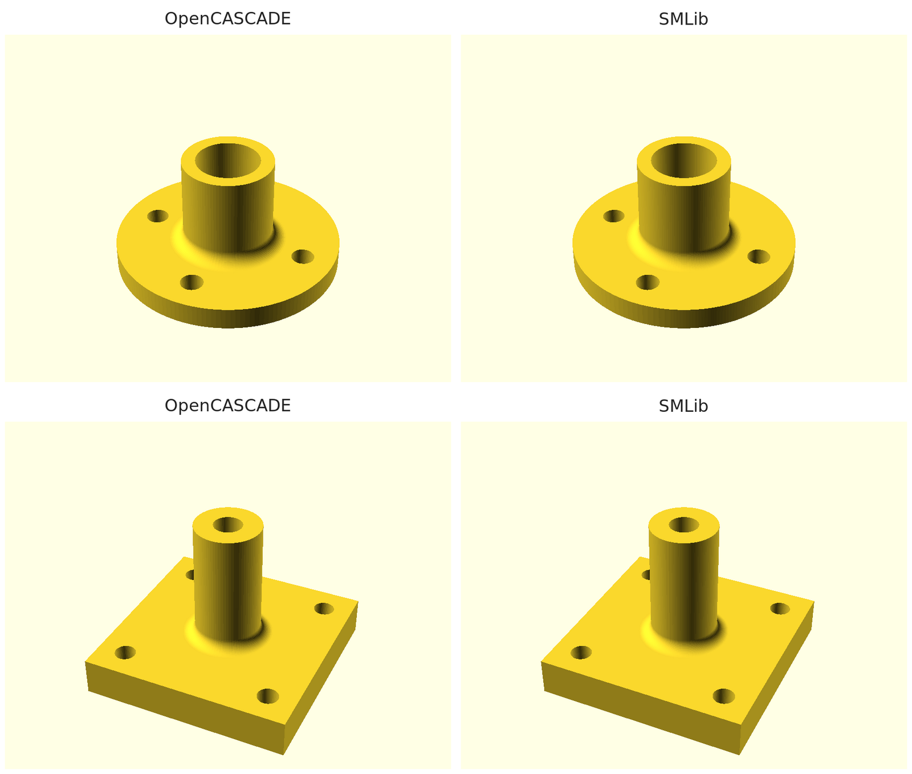

On 8 October NVIDIA published usd-brep, which is SMLib: the NURBS solid modelling kernel that Solid Modeling Solutions sold for twenty-five years, about a million lines of C++, now under the Apache 2.0 licence. Until last week there was exactly one open kernel with production booleans and fillets, OpenCASCADE. Now there are two.
We have a small interpreter, oscad, that reads OpenSCAD-style code and builds the part on OpenCASCADE instead of a mesh library, so the output is an exact STEP solid rather than triangles. The obvious question was whether to switch it to SMLib. We did not. We added SMLib beside OpenCASCADE and made the interpreter run on either, because a second kernel is worth more as a check than as a replacement.
Why a second kernel is a test
Boundary-representation booleans fail in two ways. One is loud: the operation reports an error and you get nothing. The other is quiet: it reports success and hands back a solid with a face missing, a sliver added, or an operand dropped. The quiet kind is the one that reaches the machine shop.
With one kernel the only outside check we had was OpenSCAD itself, whose output is a mesh. We compare bounding boxes against it across its own test corpus, and that catches gross errors. It cannot catch a fillet applied to the wrong edges, because the bounding box does not move.
Two kernels that share no code are a sharper instrument. Build the same part on both, compare bounding box and volume, and any disagreement is a finding: a bug in one kernel, a bug in our code on one side, or a difference in what an operation means. Agreement to a few parts per million is strong evidence that neither is quietly wrong, because two independent implementations would have to be wrong in the same way.

The flange is a disk and a tube joined by a concave fillet, with five bores subtracted. The post mount is a plate with a post seated on it by a face-to-face datum query, then a weld fillet. Each row is the same source file built by the two kernels. The volumes agree to within 0.004% at this mesh resolution, and to 0.001% when the meshes are made finer.
What we built
- A standalone build of the kernel. usd-brep ships with NVIDIA's Omniverse build system and pulls in OpenUSD. The kernel itself and its C-style wrapper need neither. A forty-line CMake file compiles them from the checkout with TBB as the only dependency. It takes about seven minutes.
- A bridge to STEP. SMLib has no STEP writer. We walk its topology, carry every surface and curve across as exact NURBS with SMLib's own shared vertices and edges, and let OpenCASCADE write the STEP file. About four hundred lines. On a plate with sixteen holes the volume before and after the bridge agrees to three parts per million.
- A kernel seam in the interpreter. The language front end already produced a plain data tree. That tree is now handed to a backend, OpenCASCADE by default or SMLib with a flag, and nothing above the seam knows which. The OpenCASCADE path moved behind the seam with no change in behaviour: the corpus gate reads the same before and after.
- The SMLib backend. Primitives, 2D profiles and extrudes, transforms, booleans, fillets with convex and concave edge selection, and the datum-frame
attach()operation, which ported in about eighty lines because it is a pure query over faces. - A two-kernel differential. One script runs every sample through both kernels and compares bounding box and mesh volume. The existing OpenSCAD corpus gate takes a kernel name and runs unchanged on either.
Results
| Check | OpenCASCADE | SMLib |
|---|---|---|
| Our 16 sample and example parts, bbox and volume against the other kernel | 16 of 16 agree | 16 of 16 agree |
| OpenSCAD test corpus, 139 files in scope, bbox against OpenSCAD | 67 matched · 0 mismatched · 69 not supported | 56 matched · 0 mismatched · 81 not supported |
| STEP output passes OpenCASCADE's validity check | all | all |
The twelve extra files SMLib cannot run are declared limits of our backend, not wrong answers: exporting a bare 2D shape, mixing 2D and 3D, mirroring a 2D profile, and two extrude options. Sixteen boolean subtractions on the plate example take about forty milliseconds in total on SMLib. We have not benchmarked the two kernels against each other beyond that.
What disagreement found
Three things turned up as the kernels disagreeing, not as anyone reading code.
- A sign convention. To fillet only convex edges we ask the kernel for the angle between the two faces at each edge. SMLib measures that angle outside the material: a cube edge reads 270 degrees and a reentrant corner reads 90, the opposite of what we assumed. The bracket, the flange and the stepped block all came out with the wrong edges rounded, and the volume difference on the stepped block was the volume of exactly one concave fillet. That is what pointed at the classification rather than the fillet itself.
- A silent boolean failure. One corpus file revolves a triangle whose edge lies on the axis, then unions it with a box whose face lies in the plane of that axis. SMLib reports success and returns the box alone, 540 cubic units where the union should be about 1,010. Move the box half a millimetre and it is correct. We did not try to work around the kernel. The backend now measures the result of every union against its larger operand and refuses to continue if volume went missing, so this file is reported as unsupported instead of exported wrong.
- A crash. Asking SMLib to mesh a flat sheet body, which is how we would export a 2D-only drawing, dereferences a null pointer inside the kernel. The backend refuses 2D-only output with a message instead of segfaulting.
The rest of the bugs were ours, in the bridge: parts made of several separate bodies, a torus that is a single face closed on itself, and intersection curves whose ends miss their vertices by a millionth. The corpus gate and the volume check found each of them within a minute of the change that caused it.
What this does not show
- Sixteen parts of ours and 56 corpus files is a small sample. The corpus check is bounding box only; the volume check is on our sixteen.
- Agreement between two kernels says both are consistent with each other. It does not say either is right in places where both might fail the same way, for instance on faces that exactly coincide, which neither B-rep kernel handles gracefully.
- The STEP bridge writes every surface as a B-spline, including planes and cylinders. The files are exact and valid but a downstream CAD program will not recognise a cylinder as a cylinder. Mapping the analytic types across is the next step.
- A sphere with poles does not cross the bridge cleanly. We build spheres pole-free instead, which SMLib supports directly.
- This is one afternoon's work on a kernel that was public for five days. The upstream project's own known-issues list is honest and not short.
Why it matters to us
Our pipeline is define, simulate, verify, build. The verify step is only as good as the oracle. For geometry the oracle has been the kernel that made the geometry, which is circular. Two independent kernels break the circle for the class of errors that matter most, the ones that report success. From here on, any kernel-facing change to oscad runs through both, and a part we hand to a shop has been built twice.
What's next
Map planes, cylinders, cones, spheres and tori to their analytic STEP entities in the bridge. Carry SMLib's own trimming curves across instead of projecting, which removes the pole limitation. Add 2D booleans on the SMLib side. Report the silent-union case upstream with the reduced file.
Who did what
We decided to try SMLib and asked whether it should be a branch or a pluggable backend. Claude did the spike, the standalone build, the bridge, the backend, the comparison scripts and this write-up. The kernels are the work of their authors: Open Cascade SAS, and Solid Modeling Solutions and NVIDIA.
The code is at punkfab/openscad-occt; the spike, results and remaining gaps are in issue #2. Got a part that needs to be right the first time? Start a project →